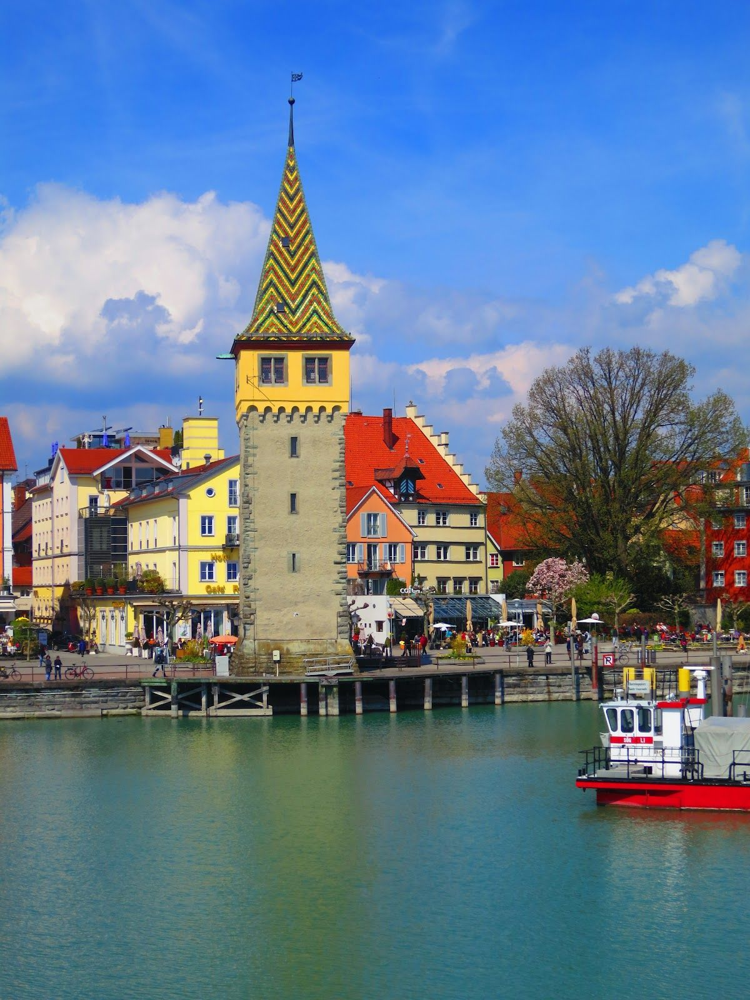
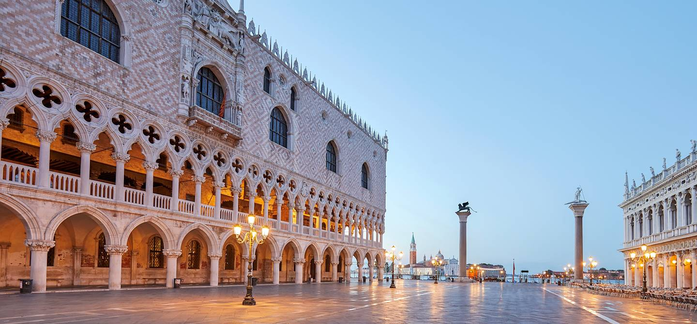
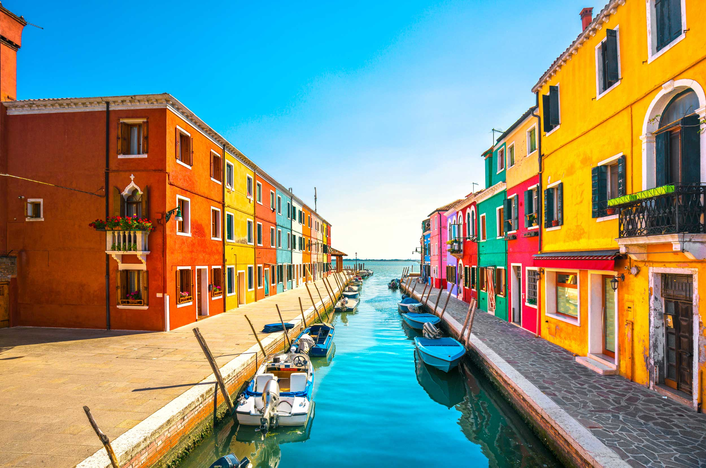

Au cours de l'été 2019, ma famille et moi avons visité la Suisse, l'Allemagne, l'Autriche et l'Italie. De ce voyage, j'ai retenu ces six lieux, qui m'ont particulièrement plus.
Mes parents , mes soeurs et moi nous sommes déplacés en camping car durant toute le durée du voyage
(Cliquez sur les images pour voir la localisation
et sur les titres pour aller à la page dédiée)
| Château de Gruyères | Lindau | Le deutsche Museum |
| |
 | |
| Salzburg | Le palais des Doges | Murano |
|  |  |